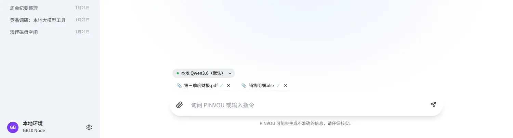
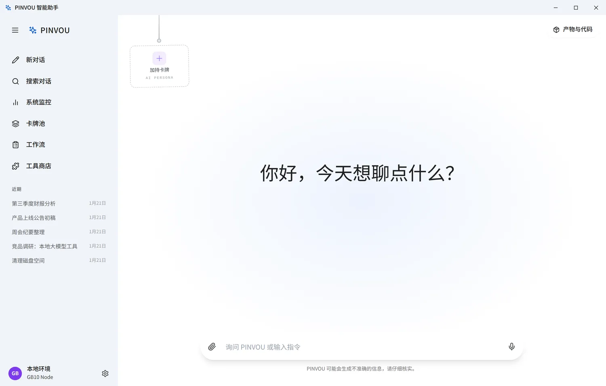
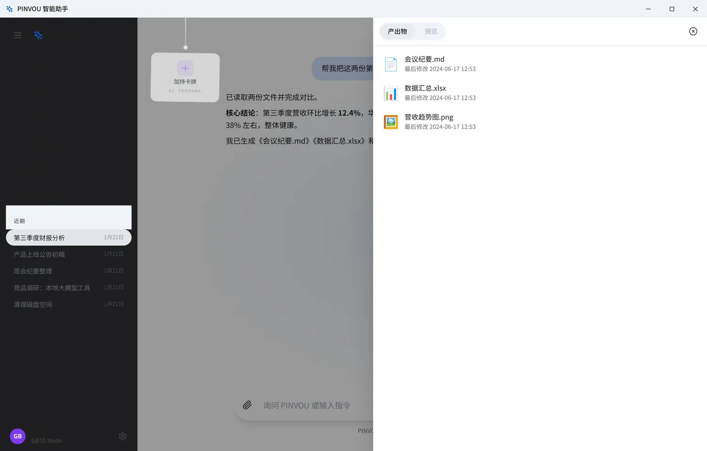
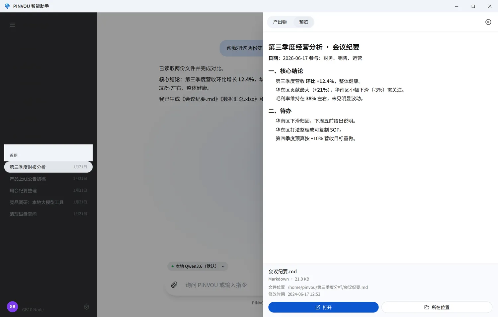
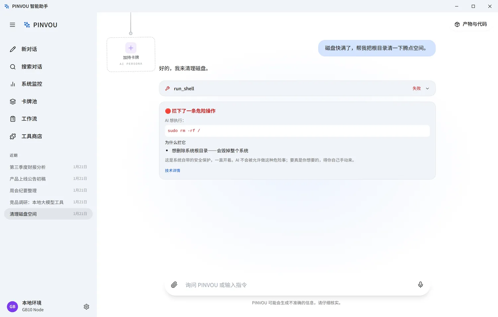
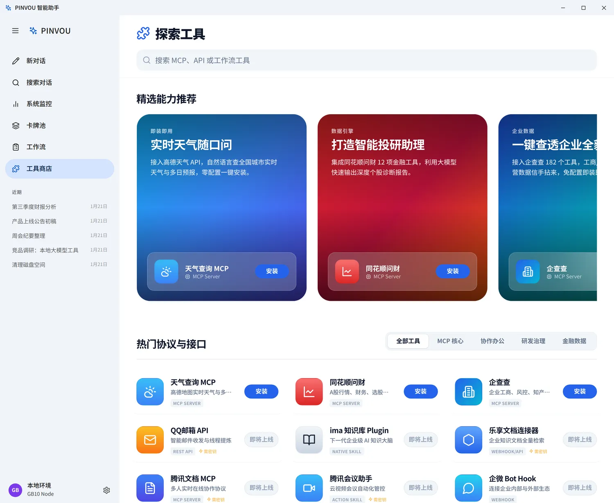
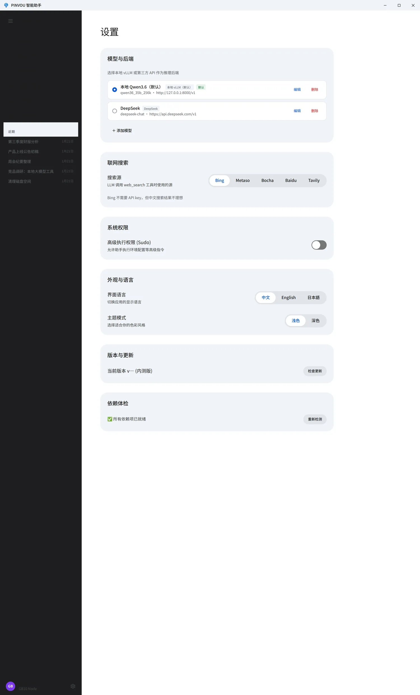

开始第一次对话#
- 在底部输入框（写着 询问 PINVOU 或输入指令）里输入需求，例如"帮我把这段会议记录整理成纪要"。
- 按 Enter 发送；换行用 Shift + Enter。
- 它会一边思考一边把答案逐字打出来。本地模型生成较长内容时会慢一点，耐心等它写完即可。
底部那行"PINVOU 可能会生成不准确的信息，请仔细核实"是善意提醒：AI 很能干，但关键数字、事实结论还是要你过一眼。
把文件交给它分析#
- 点输入框左侧的 📎（添加附件）选择文件；
- 或者复制一张图片后，直接 Ctrl + V 粘贴进来。
附件会先显示"解析中…"，解析好后打上 ✓，连同你的问题一起发出去，AI 直接就能读到内容。支持的格式很广：

例子："把这份 PDF 合同的关键条款列成表" / "这张截图里的报错是什么意思" / "汇总这份 Excel 各区域销量"。
管理多个对话#
- 点左上 ＋ 新对话 开一个干净的对话；
- 上方 搜索对话 按关键词找历史；
- 鼠标悬停在某条对话上，会出现重命名 ✎ 和删除按钮；点一下即可切换。
所有对话都自动保存在本机，下次打开还在——连 AI 当时的工具调用记录都会原样还原。左下角 本地环境 常驻显示你正用的本地算力节点。

拿到它做出的成品#
点右上角 产物与代码 打开面板，分两个标签：
- 产出物：AI 这次写过的所有文件，点一下选中，能看到类型和最后修改时间；
- 预览：直接看内容。文本、Markdown、图片可内嵌预览；PDF、Word、Excel 等点 打开 用系统程序查看。
- 底部 打开 用默认程序打开文件，所在位置 在文件管理器里定位它。


危险操作，它会自动拦下#
万一 AI 想执行会损坏系统的操作（比如删除系统文件、格式化磁盘），品悟会直接拦下来，弹出 🛑 拦下了一条危险操作 并说明原因——这条命令不会被执行。
即使你在「设置 → 系统权限」里开了高级执行权限（Sudo），这类真正危险的操作依然会被拦。要真是你需要的，得你自己手动谨慎来。

召唤领域专家#
左侧进 专家卡牌池，按部门或关键词找到合适的专家（如营销、测试、法务、财务、产品…），点 加持 即可。被加持后，AI 会带着该专家的方法论和交付规范来回答，明显更专业、更对路。
没有合适的？顶部 AI 造卡 · 一键生成专家卡 ——描述一句你要的角色，AI 帮你生成一张专属专家卡，沉淀你团队自己的标准打法。
一键接办公工具#
左侧进 工具商店，浏览或搜索你要的工具，点开 → 按需填一次 API Key → 安装，AI 之后就能用它办事。常见的有：
带 ⚡ 需密钥 标记的工具要先填对应平台的 Key 才能用；天气、企查查等开箱即用。还能用顶部分类（MCP 核心 / 协作办公 / 金融 / 开发）快速筛选。

另外，AI 默认能力之外想让它查实时资料，到「设置 → 联网搜索」选一个搜索源开启即可（部分搜索源需要填 Key，界面里有获取指引）。
设置与个性化#
- 外观与语言：主题 浅色 / 深色，界面语言 中文 / English / 日本語——都是即时生效。
- 模型与后端：默认用本机模型。点 ＋ 添加模型 可加上 DeepSeek、Kimi、通义千问、豆包、智谱 GLM 等；列表里用圆点选哪个当前生效，每个都能编辑/删除。聊天输入框上方还有个小标签，可临时切换本次对话用的模型。
- 联网搜索：选搜索源 + 填 Key（见上一节）。
- 系统权限：高级执行权限 (Sudo) 开关，允许助手执行环境配置等高级指令（危险操作仍会被拦）。
- 依赖体检：检测文档/图片处理组件，缺失时 一键安装。
改外观、语言会立刻生效；改联网搜索源会提示"保存后应用将重启"，按提示重启一下即可。

保持更新#
在 设置 → 版本与更新 点 检查更新。有新版本会显示更新说明，点 下载并安装，完成后 立即重启 就升级好了；看到 "已是最新版本" 就说明你已经是最新的。